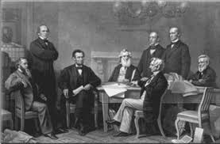
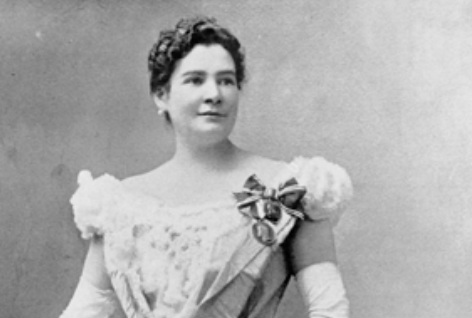

La preparación de un discurso es una habilidad fundamental para los oradores, y algunos de los más famosos a lo largo de la historia han perfeccionado este arte. Desde la organización de ideas hasta el manejo de la emoción y la conexión con la audiencia, cada orador ha desarrollado sus propios métodos para cautivar y persuadir. Este tema explora las técnicas utilizadas por oradores destacados, para estructurar sus mensajes de manera efectiva y lograr un impacto duradero. Analizar su proceso de preparación nos permite entender mejor cómo las palabras, cuando se eligen con cuidado, tienen el poder de transformar la historia.
Discurso de Antonio Nariño
En su célebre discurso ante el Senado, Nariño no solo defendió su honor, sino que también utilizó un enfoque estructurado y efectivo para conmover a sus oyentes. Comienza de manera directa, sin rodeos, y critica la juventud de sus acusadores, mostrando con amargura su sacrificio por la patria. La seguridad y dignidad con que defiende su postura, junto con la ironía y la firmeza en sus palabras, refuerzan su imagen de hombre recto, que no busca clemencia sino justicia.
Nariño presenta sus pruebas de manera persuasiva, como su amistad con los virreyes, sugiriendo que si hubiera querido enriquecerse, lo habría hecho durante los años previos a la revolución. A través de preguntas directas al auditorio, genera reflexión y aumenta el interés en su defensa. También enfatiza el sacrificio personal y familiar al servicio de la patria, mostrando que las acusaciones son, en realidad, un intento de despojarlo de los bienes que sacrificó por el bien común.
El discurso se intensifica con su relato de años de sufrimiento en prisiones y exilios, lo que profundiza la simpatía hacia él. Nariño denuncia que los cargos en su contra no son producto de un amor a la ley, sino de la perfidia y la intriga de hombres interesados en destruir su reputación.
Luego, Nariño pasa al ataque, acusando a sus enemigos de traicionar a la patria y de cooperar en catástrofes nacionales. Este giro en su discurso desvía la atención de su culpabilidad y orienta al público hacia el verdadero problema: las traiciones que han afectado a la patria. Finalmente, cierra con una exhortación a los jueces a declararlo inocente, apelando no solo a su propio bienestar, sino al prestigio y la salud de la nación, presentando a sus jueces con el dilema de permitir que triunfen los desvergonzados o de hacer justicia.
Su oratoria, combinada con su pasión y la forma en que utiliza la voz vibrante y firme, asegura que su discurso no solo sea una defensa lógica, sino una manifestación de un hombre indignado y comprometido con la libertad de su patria.

Método de Trabajo Intelectual
En este capítulo se presentan algunos consejos generales para mejorar la disposición y estructura de los discursos, basados en la conferencia del sociólogo André Siegfried. Estos consejos son útiles para abordar diversos problemas intelectuales y pueden aplicarse a la elaboración de discursos. Los puntos clave incluyen:
- Sacudir la pereza mental: Ser activo y reflexivo en el proceso intelectual.
- Observar antes de discutir: No creer lo que se desea creer, sino estudiar los hechos tal como son.
- Masticación y digestión: Medir y ponderar las ideas, compararlas y analizarlas por su relevancia.
- Situar el asunto: Administrar la información adecuadamente y concentrarse en lo esencial, olvidando lo irrelevante.
- Reclutamiento de ideas: Buscar las ideas necesarias, movilizarlas y concentrarlas para un propósito específico.
El método también propone un enfoque estructurado para presentar y resolver problemas, siguiendo estos pasos:
- Mostrar algo que está mal.
- Mostrar cómo se puede remediar.
- Pedir cooperación para implementar la solución.
Se enfatiza la importancia de la presentación clara del problema: un problema bien presentado está medio resuelto. Además, se destaca que la verdad debe asentarse mediante el esfuerzo propio, sin aceptar lo que se nos dice sin cuestionarlo.
Finalmente, la importancia de bosquejar soluciones posibles es esencial para guiar el pensamiento y el discurso.

Cómo armaba el esqueleto Woodrow Wilson
Woodrow Wilson explicó su método de preparación de discursos comenzando con una lista de los temas que quería tratar. Mentalmente, organizaba los temas según sus relaciones naturales, creando lo que él llamaba el "esqueleto" del discurso. Después, lo escribía en taquigrafía para ahorrar tiempo, lo transcribía a máquina y lo corregía, añadiendo material a medida que avanzaba.
Por su parte, Roosevelt se dedicaba a recolectar y evaluar datos con cuidado, formaba sus conclusiones y, con una sensación de seguridad, comenzaba a dictar su discurso rápidamente para darle un tono espontáneo. Luego revisaba la copia dactilográfica, corrigiendo y mejorando, antes de dictar nuevamente. Aunque no aprendía el discurso de memoria, el proceso de dictado y revisión le ayudaba a familiarizarse con el material, lo que le otorgaba seguridad y naturalidad al hablar.
Sir Oliver Lodge también destacó que dictar los discursos rápidamente y con sustancia le era muy útil para prepararse. Se recomienda a los estudiantes dictar sus discursos y luego escucharse, ya que este ejercicio ayuda a clarificar ideas, mejorar la dicción y reducir la ociosidad mental.

La historia clasica de Benjamin Franklin
Benjamin Franklin, en su autobiografía, comparte cómo mejoró su dicción y la habilidad para organizar sus pensamientos. Este relato se considera una pieza clásica de la literatura, ya que no solo es accesible, sino también agradable. Su método de autoeducación en el uso de palabras y la ordenación de ideas es ejemplar y revela cómo la práctica constante puede llevar al perfeccionamiento.
Todo comenzó cuando Franklin encontró un volumen del Espectador, un libro que nunca había visto antes. Fascinado por el estilo de escritura, decidió imitarlo. Tomó algunos de los artículos, los resumió y los guardó por unos días. Luego, sin consultar el libro, trató de reescribir los artículos, desarrollando las ideas de forma más completa, utilizando las palabras que consideraba más adecuadas. Tras comparar su trabajo con el original, descubría errores y los corregía.
Este proceso de reescritura y corrección fue crucial para su aprendizaje. A través de él, no solo mejoró su uso del lenguaje, sino que también aprendió a ordenar sus pensamientos de manera más lógica y clara. Franklin se dio cuenta de que, a través de la práctica continua, podía adquirir una mayor facilidad para utilizar palabras, algo que también había experimentado en su época de poesía, donde la búsqueda constante de sinónimos para rimas y métrica lo obligaba a ser creativo y a diversificar su vocabulario.
Además de reescribir los artículos, Franklin se dedicó a desordenar sus notas y luego intentar reorganizarlas en el mejor orden posible. Este ejercicio le enseñó a estructurar mejor sus ideas. A medida que avanzaba, notó mejoras en algunos pasajes, lo que lo animó a seguir perfeccionando su estilo. Aunque era consciente de sus faltas, también tenía la satisfacción de reconocer en algunos fragmentos pequeños avances en su capacidad de expresión. Su ambición era convertirse en un buen escritor, y este esfuerzo constante lo motivó a seguir perfeccionándose.

¿Debemos emplear notas mientras hablamos?
Abraham Lincoln, aunque conocido por su habilidad para la improvisación, nunca pronunció un discurso importante sin prepararlo por escrito, especialmente los discursos de Estado. Sin embargo, cuando estaba en Illinois, evitaba usar notas al hablar, pues consideraba que tendían a cansar y confundir al público. Las notas, según él, distorsionan el contacto directo con el auditorio y crean una atmósfera de superficialidad, lo que puede hacer que el orador parezca inseguro.
Si bien Lincoln recomendaba no depender de las notas durante la intervención, sugería que estas fueran útiles en la preparación del discurso. Deben ser detalladas y abundantes durante la fase de ensayo, pero deben limitarse a ser una herramienta de emergencia durante la presentación. Si se sienten necesarias, las notas deben ser breves, escritas en letras grandes, y ocultas discretamente, con el fin de no mostrar inseguridad frente al público.
Aunque el uso de notas puede parecer una muestra de debilidad, en ciertos casos, como cuando se está comenzando a hablar en público, son prudentes. Para los oradores novatos, tener algunas notas cortas puede ser esencial para evitar perderse en el discurso y no olvidar puntos importantes. Como un niño que utiliza muebles para apoyarse al caminar, los oradores inexpertos pueden necesitar notas al principio, pero con el tiempo, deben ser capaces de hablar sin depender de ellas.

No aprendamos los discursos al pie de la letra
No debemos tratar de memorizar un discurso palabra por palabra, ya que esto puede ser contraproducente y llevar a la frustración. Si nos enfocamos demasiado en recordar la fraseología exacta, nuestra mente estará distraída en ese esfuerzo y no en el mensaje que queremos transmitir. El resultado será una exposición rígida, fría e inhumana.
Al igual que cuando tenemos que comunicarnos con alguien, no aprendemos lo que vamos a decir de memoria, sino que reflexionamos sobre las ideas principales y las organizamos. De la misma manera, deberíamos preparar un discurso enfocándonos en los conceptos clave y ensayarlo mentalmente, en lugar de intentar memorizar cada palabra.
El general Grant, al escribir las condiciones de la rendición, no se preocupó por las palabras exactas, sino por expresar sus ideas con claridad. Esto demuestra que, cuando tenemos convicciones firmes, las palabras surgen naturalmente.
Una vez que tenemos las ideas claras, es importante ensayar el discurso varias veces, ya sea en silencio o en voz alta, visualizando a nuestro auditorio. Este ejercicio nos ayudará a comprender mejor el mensaje y a sentirnos más seguros al presentarlo.

Por qué los labriegos creían que Lincoln era "la mar de perezoso"
Lincoln, en su juventud, caminaba largas distancias para escuchar a oradores famosos, y al regresar, se subía a un tocón y daba discursos a sus compañeros de trabajo. Los capataces lo consideraban perezoso por perder el tiempo con discursos y cuentos, aunque esta actividad era una forma de ensayo para su futura carrera como orador. Este comportamiento no era único de Lincoln; otros grandes oradores, como Woodrow Wilson, también practicaron en sociedades de debate.
El éxito en el arte de hablar en público requiere ensayo constante. Oradores exitosos como Lloyd George, Beecher y Burke, ensayaron con gran dedicación. Joseph Choate aprovechaba los momentos de su trayecto al trabajo para planificar sus discursos, y Depew nunca dejó que su trabajo lo distrajera de la preparación de sus discursos, siempre encontrando tiempo al final del día.
La clave para mejorar como orador es la práctica. Incluso personas ocupadas, como Charles Darwin y Theodore Roosevelt, aprovechaban cada minuto libre para estudiar o planificar. Aprovechar el tiempo sabiamente y practicar regularmente, incluso con otros compañeros, es fundamental para mejorar nuestras habilidades oratorias.
Cómo se divertían Carlitos Chaplin y Douglas Fairbanks
A pesar de ser multimillonarios y figuras de renombre mundial, Carlitos Chaplin y Douglas Fairbanks no encontraron mayor placer que en un juego sencillo pero enriquecedor: la improvisación. Este juego, que comenzó una noche en un banquete imaginario donde Fairbanks presentó a Chaplin, se convirtió en una tradición que duró casi dos años. En este ejercicio, Chaplin, Fairbanks y Mary Pickford, su amiga y colega, escribían palabras o temas en papeles que luego mezclaban entre sí. Cada uno debía sacar uno de esos papeles y, durante 60 segundos, hablar sin interrumpirse sobre la palabra que le tocara. La regla era que no podían repetir ninguna palabra ya usada.
El objetivo era desafiar la capacidad de improvisación de cada uno, lo que les permitió desarrollar una asombrosa agilidad mental para pensar y hablar de manera rápida y coherente sobre cualquier tema. Fairbanks recuerda con humor un ejemplo cuando le tocó hablar sobre "pantallas", un tema que parecía sencillo pero que resultó ser un verdadero reto. A pesar de no saber mucho sobre pantallas, logró mantenerse a flote durante los 60 segundos.
El juego no solo les permitió divertirnos, sino que también les ayudó a ampliar su vocabulario y conocimientos en una variedad de temas. Según Fairbanks, lo más importante fue aprender a pensar rápidamente bajo presión. Con el tiempo, este ejercicio se convirtió en una herramienta valiosa para ellos, enseñándoles a pensar de pie y a desarrollar una mente ágil, cualidad esencial en su oficio. Después de casi dos años de práctica, ellos seguían jugando, lo que significa que el juego no solo les proporcionó entretenimiento, sino también un continuo beneficio personal y profesional.

Ejercicio vocal: El reposo absoluto
La cantante Schumann-Heink afirmaba que el esfuerzo es una de las principales causas que dañan la voz. Según ella, el cantante debe estar en un estado de reposo, no de flojedad, sino de libertad, ligereza y falta total de tensión. Este concepto de reposo también se aplica al habla, ya que el esfuerzo y la tensión nerviosa afectan la voz y el rostro. La clave está en la tranquilidad y el reposo.
Para lograr este estado, es esencial aprender a relajar todo el cuerpo, ya que cualquier tensión en él repercute en la voz. La voz, al igual que un instrumento musical, depende de la armonía de nuestro cuerpo. Un poco de tensión en cualquier parte del cuerpo puede afectar la calidad de la voz. La relajación es un proceso consciente que no implica inactividad, sino una liberación total de las tensiones.
Un ejercicio sencillo consiste en relajar el cuerpo completamente, comenzando con el brazo y asegurándonos de que oscile como un péndulo, lo que indica que está completamente relajado. Si el brazo no oscila, significa que aún hay tensión, y debemos continuar practicando. Repetir este ejercicio ayuda a tomar conciencia de las tensiones y a corregirlas.
Otro ejercicio recomendado es acostarse de espaldas y, antes de dormir, respirar profundamente, utilizando el diafragma. Este tipo de respiración profunda debe ser lenta, natural y sin forzarla. Al acostarnos, debemos relajarnos completamente, como si todo nuestro cuerpo fuera un saco de algodón. Imaginemos que toda la energía fluye hacia el centro de nuestro cuerpo y que no tenemos fuerzas para mover ni los brazos ni las piernas. Esta sensación de total relajación ayuda a liberar las tensiones acumuladas.
Si pensamientos de estrés o ansiedad invaden nuestra mente, debemos alejarlos con palabras tranquilizadoras, como "Estoy tranquilo" y "Estoy en reposo absoluto". Este proceso de pensamiento positivo y la respiración profunda contribuyen a sumirnos en un sueño reparador. Al despertar, debemos intentar mantener ese estado de reposo y relajación en nuestra vida diaria, especialmente cuando hablamos.
Cuando logremos esta sensación de reposo absoluto, nuestra voz será más libre, natural y poderosa. Al hablar, no deberíamos sentir tensión en el cuello, la garganta o el rostro. La voz debería surgir de una postura relajada, con una respiración controlada y profunda. La relajación del cuerpo y la mente no solo es beneficiosa para la voz, sino también para la salud en general.
Incorporar este ejercicio en nuestra rutina diaria, incluso durante breves momentos del día, es fundamental para mantener una voz sana y fuerte. Cuando nos sentimos relajados y descansados, nuestra comunicación se vuelve más efectiva, ya que la voz fluye con mayor facilidad y sin esfuerzo. Practicar el reposo absoluto, tanto en el cuerpo como en la mente, es la clave para alcanzar una excelente calidad vocal y una mayor confianza al hablar.
